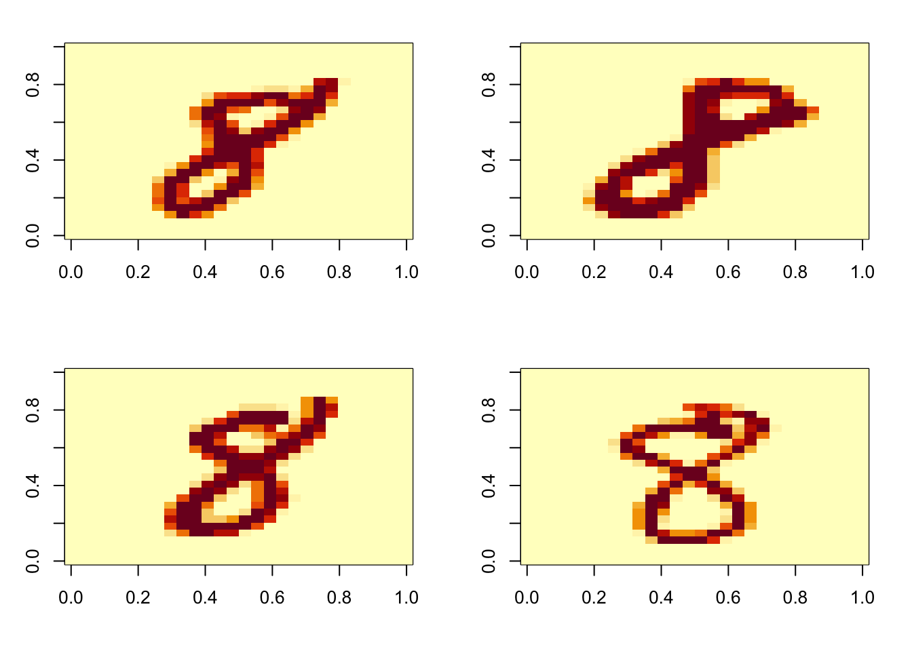

List of 2
$ train:List of 2
..$ images: int [1:60000, 1:784] 0 0 0 0 0 0 0 0 0 0 ...
..$ labels: int [1:60000] 5 0 4 1 9 2 1 3 1 4 ...
$ test :List of 2
..$ images: int [1:10000, 1:784] 0 0 0 0 0 0 0 0 0 0 ...
..$ labels: int [1:10000] 7 2 1 0 4 1 4 9 5 9 ...
mt8ind = which(mnist$train$labels==8)
imgs8 = mnist$train$images[mt8ind,]
par(mfrow=c(2,2),mar=c(4,3,2,2))
for (i in 1:4) image(matrix(imgs8[i,], 28)[,28:1])